<!DOCTYPE html>
<html lang="ko">
<head>
  <meta charset="UTF-8">
  <meta name="viewport" content="width=device-width, initial-scale=1">
  <title>3강. The Context of Safety DESIGN — 공공안전디자인 강의 보조교재 | SPD Lab</title>
  <meta name="description" content="공공안전디자인 3강. The Context of Safety DESIGN 강의 보조교재. 공공디자인 진흥종합계획 · 안전디자인 선행이론 · CPTED · 5대 원리">
  <link rel="canonical" href="https://www.armula.com/lectures/safety-design-03.html">
  <meta property="og:type" content="article">
  <meta property="og:site_name" content="SPD Lab">
  <meta property="og:title" content="3강. The Context of Safety DESIGN — 공공안전디자인 강의 보조교재">
  <meta property="og:description" content="공공디자인 진흥종합계획 · 안전디자인 선행이론 · CPTED · 5대 원리">
  <meta property="og:image" content="https://www.armula.com/lectures/img/safety-design-03/s1.jpg">
  <meta name="robots" content="noindex, nofollow, noarchive">
  <meta name="theme-color" content="#0a0a0b">
  <link rel="preconnect" href="https://fonts.googleapis.com">
  <link rel="preconnect" href="https://fonts.gstatic.com" crossorigin>
  <link href="https://fonts.googleapis.com/css2?family=Noto+Sans+KR:wght@100;200;300;400;500;600;700;800;900&display=swap" rel="stylesheet">
  <link rel="stylesheet" href="../assets/css/style.css?v=20260929c">
  <link rel="stylesheet" href="lecture.css?v=20260929d">
</head>
<body class="lecture-page lx-protected">

<header class="site-header scrolled" id="top">
  <div class="wrap">
    <a href="../index.html" class="brand notranslate" translate="no" aria-label="SPD Lab 홈"><b>SPD Lab</b><span>Socio-Public Design Lab</span></a>
    <nav class="nav" aria-label="주 메뉴">
      <a href="../index.html#board">Courses</a>
      <a href="../index.html#professor">Professor</a>
      <a href="../gallery.html">Gallery</a>
      <span class="lang notranslate" translate="no" role="group" aria-label="사이트 번역"><button type="button" data-lang="ko" title="한국어">KO</button><button type="button" data-lang="en" title="English">EN</button><button type="button" data-lang="ja" title="日本語">JP</button><button type="button" data-lang="zh-CN" title="中文">CN</button></span>
      <a href="../hipd.html" class="nav-hipd"><i></i>HIPD</a>
    </nav>
  </div>
</header>
<div id="google_translate_element" class="gt-host" aria-hidden="true"></div>
<div class="lx-progress" aria-hidden="true"><i id="lxProgress"></i></div>

<main>
  <section class="lx-cover">
    <div class="wrap lx-cover-grid">
      <div>
        <p class="eyebrow">Public Safety Design · Lecture Note</p>
        <p class="lx-course">2026-2 공공안전디자인 · 강의 보조 교재</p>
        <p class="lx-series">Safety By Design</p>
        <h1>3강. The Context of Safety DESIGN</h1>
        <p class="lx-deck">공공디자인 진흥종합계획 · 안전디자인 선행이론 · CPTED · 5대 원리</p>
        <p class="lx-author">이현성 <a href="mailto:armula@hongik.ac.kr">armula@hongik.ac.kr</a></p>
        <div class="lx-actions">
          <a class="lx-back" href="../index.html#board">강의 목록으로</a>
        </div>
      </div>
      <figure class="lx-cover-fig">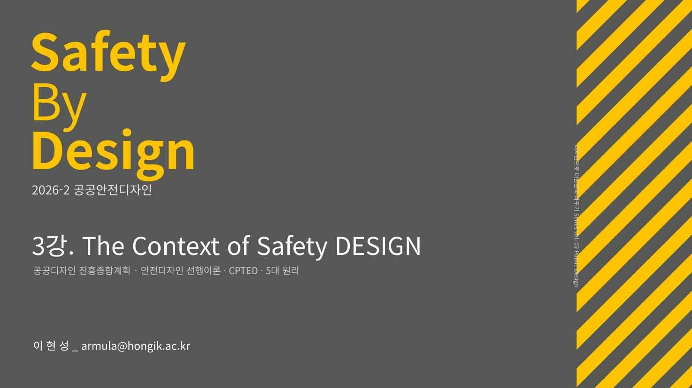</figure>
    </div>
  </section>

  <div class="wrap lx-layout">
    <nav class="lx-toc" aria-label="목차">
      <p class="lx-toc-k">Contents</p>
      <a class="lx-toc-part" href="#part-1"><small>Part 1</small>공공디자인 진흥종합계획과 안전</a>
      <a href="#sec-2">1.1 국가 법정계획으로서 공공디자인</a>
      <a href="#sec-3">1.2 왜 ‘생활안전’이 첫 번째 전략인가</a>
      <a href="#sec-4">1.3 안전 관련 제도와 정책</a>
      <a href="#sec-5">1.4 안전디자인의 필요성 — 범죄를 보는 관점의 전환</a>
      <a class="lx-toc-part" href="#part-6"><small>Part 2</small>안전디자인 선행이론</a>
      <a href="#sec-7">2.1 제인 제이콥스 — 거리의 눈</a>
      <a href="#sec-8">2.2 슐로모 엔젤 — 도시계획을 통한 범죄억제</a>
      <a href="#sec-9">2.3 레이 제프리 — 환경설계를 통한 범죄예방(CPTED)</a>
      <a href="#sec-10">2.4 오스카 뉴먼 — 방어공간 이론</a>
      <a href="#sec-11">2.5 코헨 &amp; 펠슨 — 일상활동이론</a>
      <a href="#sec-12">2.6 브랜팅햄 &amp; 브랜팅햄 — 환경범죄학이론</a>
      <a href="#sec-13">2.7 로널드 클라크 — 상황적 범죄예방이론</a>
      <a href="#sec-14">2.8 코니시 &amp; 클라크 — 합리적 선택이론</a>
      <a href="#sec-15">2.9 선행이론 종합 — CPTED 원리와의 연결</a>
      <a class="lx-toc-part" href="#part-16"><small>Part 3</small>CPTED의 이해</a>
      <a href="#sec-17">3.1 CPTED란 무엇인가</a>
      <a href="#sec-18">3.2 CPTED의 발생배경과 역사</a>
      <a href="#sec-19">3.3 1 · 2 · 3세대 CPTED</a>
      <a href="#sec-20">3.4 CPTED Framework — CPTED Circle</a>
      <a href="#sec-21">3.5 CPTED 표준화 정책 — 해외</a>
      <a href="#sec-22">3.6 국내 가이드라인과 제도화 흐름</a>
      <a href="#sec-23">3.7 국내 사례</a>
      <a class="lx-toc-part" href="#part-24"><small>Part 4</small>CPTED 5대 원리 상세</a>
      <a href="#sec-25">4.1 자연적 감시 (Natural Surveillance)</a>
      <a href="#sec-26">4.2 접근통제 (Natural Access Control)</a>
      <a href="#sec-27">4.3 영역성 강화 (Territoriality)</a>
      <a href="#sec-28">4.4 활동의 활성화 (Activity Support)</a>
      <a href="#sec-29">4.5 유지관리 (Maintenance and Management)</a>
      <a class="lx-toc-part" href="#part-30">참고문헌</a>
    </nav>
    <article class="lx-body">
<header class="lx-part" id="part-1"><p class="lx-kicker">Part 1</p><h2>공공디자인 진흥종합계획과 안전</h2><p class="lx-lead">국가 법정계획 속에서 ‘생활안전’이 갖는 위상</p></header>
<p>Part 1에서는 국가 법정계획으로서의 공공디자인 정책 안에서 ‘생활안전’이 어떤 위상을 갖는지, 그리고 안전을 다루는 여러 제도가 왜 공공디자인이라는 매개를 필요로 하는지를 살펴봅니다.</p>
<h3 id="sec-2">1.1 국가 법정계획으로서 공공디자인</h3>
<p>2016년 시행된 「공공디자인의 진흥에 관한 법률」은 공공디자인을 지자체의 재량 사업이 아니라 국가 정책의 영역으로 끌어올렸다. 이 법률에 근거해 문화체육관광부는 2018년 제1차 공공디자인 진흥종합계획(2018~2022)을 수립했으며, 이후 지자체는 이 국가계획과 정합성을 갖춘 지역공공디자인 진흥계획을 각각 수립하도록 연계되어 있다.</p>
<blockquote class="lx-quote"><p>“문체부 진흥계획 정합성을 통해 공공디자인 체계 확립으로 지속가능한 발전 방향 마련”</p><cite>— 문화체육관광부, 「공공디자인 진흥종합계획」(2018)</cite></blockquote>
<p>이 계획이 제시하는 비전은 ‘안전하고 편리하고 품격 있는 삶’이며, 목표는 ‘생활 속에서 체감하는 공공디자인’이다. 두 표현 모두 공공디자인의 성과를 전문가의 심미적 평가가 아니라 시민이 일상에서 실제로 느끼는 변화로 규정한다는 점에서 공통된다. 즉 공공디자인은 더 이상 거리의 미관을 다듬는 일에 머무르지 않고, 국민의 삶의 질을 좌우하는 국가 정책 수단으로 다시 정의된 것이다.</p>
<figure class="lx-fig"><figcaption>제1차 공공디자인 진흥종합계획의 비전과 목표(강의 슬라이드 4쪽)</figcaption></figure>
<h3 id="sec-3">1.2 왜 ‘생활안전’이 첫 번째 전략인가</h3>
<p>제1차 공공디자인 진흥종합계획은 여러 전략 가운데 ‘생활안전’을 첫 번째 자리에 둔다. 공공디자인의 목표가 ‘보기 좋은 도시’에서 ‘체감하는 안전한 일상’으로 이동했음을 보여 주는 배치다. 이 전략은 아래 세 개의 세부 과제로 구체화된다.</p>
<dl class="lx-cards"><div><dt>과제 1-1</dt><dd><b>범죄예방 협력체계 디자인</b><span>경찰·지자체·주민이 협력하는 거버넌스 기반의 범죄예방 환경설계(CPTED). 골목길·공원·통학로 등 취약지역의 환경을 개선하되, 시설을 설치하는 데서 그치지 않고 운영·관리 체계까지 함께 디자인한다.</span></dd></div><div><dt>과제 1-2</dt><dd><b>교통안전 디자인</b><span>보행자 중심의 교통안전 환경을 조성한다. 어린이·고령자 등 교통약자 보호구역을 디자인하고, 누구나 인지하기 쉬운 노면표시·안내·시설물 체계를 갖춘다.</span></dd></div><div><dt>과제 1-3</dt><dd><b>재난대비 안전 디자인</b><span>재난 상황에서 누구나 이해하고 행동할 수 있는 디자인을 지향한다. 대피 동선과 안내 사인을 직관적으로 시각화하고, 평상시의 경관과 조화를 이루는 재난대비 시설을 마련한다.</span></dd></div></dl>
<aside class="lx-box lx-note"><span class="lx-box-k">Note</span><b>안전은 다른 모든 가치의 전제조건</b><ul><li>안전은 ‘모든 이를 위한(전략 2)’, ‘생활편의(전략 3)’, ‘생활품격(전략 4)’이 성립하기 위한 기초 조건이다.</li><li>「공공디자인의 진흥에 관한 법률」(2016 시행)에 근거한 국가 법정계획은 지자체의 지역공공디자인 진흥계획으로 이어진다.</li><li>안전디자인은 경찰력·처벌 중심의 사후 대응을 보완하는 간접적·예방적 환경안전 전략의 실행 수단이다.</li></ul></aside>
<figure class="lx-fig"><figcaption>생활안전 전략의 세 과제와 전제조건으로서의 안전(강의 슬라이드 5쪽)</figcaption></figure>
<h3 id="sec-4">1.3 안전 관련 제도와 정책</h3>
<p>안전은 어느 한 부처가 전담하는 영역이 아니다. 재난·교통·시설·식품·범죄 등 분야별로 서로 다른 기본법과 관리기관이 존재하며, 여기에 지자체별 안전 관련 조례가 더해져 제도가 여러 갈래로 분산되어 있다. 이렇게 흩어진 안전 제도를 공간이라는 하나의 차원에서 통합하고, 시민이 그 통합된 결과를 실제로 체감하게 만드는 매개가 바로 공공디자인이다.</p>
<figure class="lx-fig">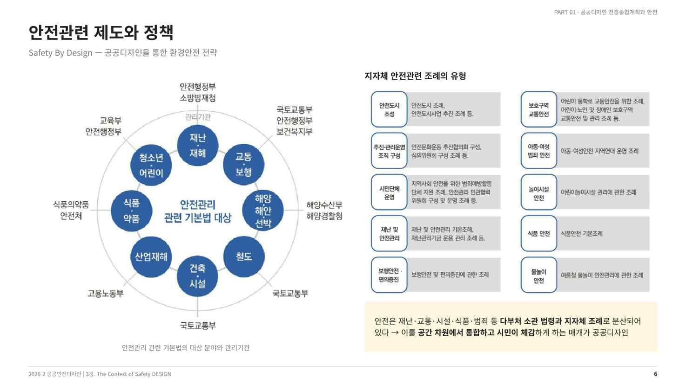<figcaption>안전관리 관련 기본법의 대상 분야·관리기관과 지자체 조례 유형(강의 슬라이드 6쪽)</figcaption></figure>
<h3 id="sec-5">1.4 안전디자인의 필요성 — 범죄를 보는 관점의 전환</h3>
<p>안전디자인, 그중에서도 범죄예방 환경설계가 필요한 이유는 범죄를 설명하는 관점의 변화에서 찾을 수 있다. 전통범죄학은 범죄를 ‘가해자에 의한 불법행위’로 규정하고 그 원인을 가해자 개인에게서 찾았다. 반면 환경범죄학은 범죄를 ‘가해자와 피해자가 동시에 특정 환경에서 벌이는 이벤트’로 재정의한다. 이는 인간과 환경의 상호작용, 그리고 상황에 따라 달라지는 범여의 역동성을 설명해 준다.</p>
<p>공공장소를 이용하는 사람은 의식적으로든 무의식적으로든 그 환경이 제공하는 단서를 읽어 안전한 장소와 위험한 장소를 구분한다. 이러한 환경심리에 초점을 맞추어, 범죄행위를 촉발하는 공간 요소를 제거하는 방향으로 공간을 디자인하는 것이 바로 CPTED의 기본 원리다.</p>
<aside class="lx-box lx-note"><span class="lx-box-k">Note</span><b>사례 — 강호순 납치사건, 수원 당수동 정류장의 환경 분석</b><ul><li>비닐하우스와 수목에 가려 인근 주택에서 정류장 안쪽이 보이지 않았다 — 자연적 감시의 결핍.</li><li>제한속도 시속 80km의 자동차전용도로에 면해 있어, 통과 차량 운전자가 주변을 관찰하기 어려웠다.</li><li>넓은 장소임에도 인적이 드물었고, 범인이 몸을 숨길 수 있는 어두운 굴다리가 인접해 있었다.</li><li>버스정보시스템(BIS)이 설치되어 있지 않아 이용자가 대기 시간을 예측할 수 없었다 — 정보 제공의 결핍.</li><li>→ 이 정류장은 자연적 감시·활동성·정보 제공이 동시에 결핍된 공간이었다.</li></ul></aside>
<figure class="lx-fig">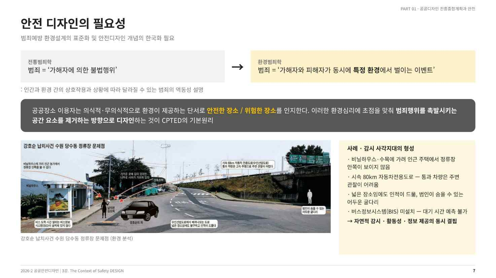<figcaption>전통범죄학에서 환경범죄학으로, 그리고 수원 당수동 정류장 사례(강의 슬라이드 7쪽)</figcaption></figure>
<header class="lx-part" id="part-6"><p class="lx-kicker">Part 2</p><h2>안전디자인 선행이론</h2><p class="lx-lead">제인 제이콥스부터 합리적 선택이론까지 — 범죄 ‘원인론’에서 ‘기회론’으로</p></header>
<p>CPTED는 어느 한 사람이 어느 날 갑자기 제안한 개념이 아니다. 1961년 제인 제이콥스에서 1986년 코니시와 클라크에 이르는 약 25년 동안, 서로 다른 배경을 가진 여덟 명(팀)의 학자가 각자의 자리에서 ‘범죄는 왜 특정 장소에서 발생하는가’라는 질문에 답하며 쌓아 올린 이론적 계보의 결과물이다. 이 흐름은 범죄의 ‘원인론’ — 왜 어떤 사람이 범죄자가 되는가 — 에서 범죄의 ‘기회론’ — 왜 하필 이곳에서 범죄가 발생하는가 — 으로 무게중심이 이동하는 과정이기도 하다.</p>
<p>여덟 이론은 서로 다른 세 개의 관점에서 출발했다.</p>
<ul class="lx-list"><li>도시계획·건축 관점 — 공간이 사람의 활동과 감시를 만든다 (제이콥스, 엔젤, 뉴먼).</li><li>범죄학 관점 — 범죄는 기회와 장소의 산물이다 (코헨 &amp; 펠슨, 브랜팅햄 부부).</li><li>상황·의사결정 관점 — 범행의 비용과 편익을 조작한다 (클라크, 코니시 &amp; 클라크).</li></ul>
<p>출발점은 달랐지만 여덟 이론이 공유하는 전제는 하나다. 범죄는 무작위로 발생하지 않으며, 특정한 시간·장소·상황에서 ‘기회’가 주어질 때 발생하고, 그 기회는 공간의 디자인과 관리로 줄일 수 있다는 것이다.</p>
<figure class="lx-fig">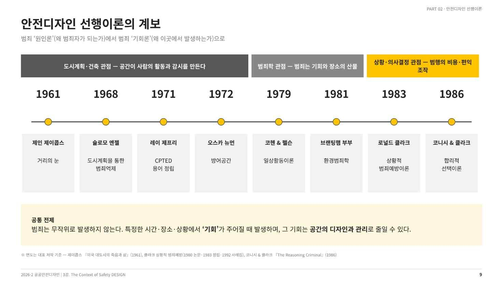<figcaption>안전디자인 선행이론의 계보, 1961~1986(강의 슬라이드 9쪽)</figcaption></figure>
<h3 id="sec-7">2.1 제인 제이콥스 — 거리의 눈</h3>
<p class="lx-src">Jane Jacobs, 『The Death and Life of Great American Cities』(1961)</p>
<p>제인 제이콥스는 1961년 저서 『미국 대도시의 죽음과 삶』에서, 도시 공간의 안전은 경찰이 아니라 비공식적 감시와 주민의 자발적 통제로 유지된다고 주장했다. 용도가 다양하게 섞인 활기찬 거리는 보행자, 창밖을 내다보는 주민, 가게를 지키는 상인을 집합적인 감시자로 만들어 잠재적 범죄자가 느끼는 위험을 높인다. 공유지와 사유지의 경계를 강조한 영역성(territoriality), 그리고 ‘거리의 눈’을 통한 감시성(surveillance) 개념은 모두 이 저작에서 출발했다.</p>
<blockquote class="lx-quote"><p>“거리에는 눈이 있어야 한다. 거리의 자연스러운 주인이라 부를 수 있는 사람들의 눈이.”</p><cite>— Jane Jacobs (1961)</cite></blockquote>
<h4>전략 요소</h4>
<p>거리의 다양성(diversity)과 활동성(activity)을 높여 비공식적 감시를 극대화하는 것이 핵심 전략이다. 혼합용도 개발, 주거·상업 시설의 병존, 보행자 중심 도시설계로 거리의 이용률을 끌어올린다.</p>
<h4>효과성과 가치</h4>
<p>범죄 기회 자체를 줄이는 동시에 사회적 통제와 공동체 의식을 자연스럽게 형성해 범행을 시도하려는 사람에게 심리적 부담을 준다. 다만 효과가 나타나기까지 장기적인 도시계획과 사회 변화가 필요해 즉각적인 효과는 제한적이다. 이 이론의 가치는 물리적 환경설계를 단순한 범죄 억제 도구가 아니라 건강한 도시 공동체를 형성하는 요소로 제시하며, 범죄예방을 도시의 사회적 활력과 연결했다는 데 있다.</p>
<aside class="lx-box lx-easy"><span class="lx-box-k">쉽게 말하면</span><ul><li>불 켜진 편의점 앞 골목이 밤에도 덜 무서운 이유는, 가게 주인과 손님이 자기도 모르게 거리를 지켜보는 눈이 되기 때문이다.</li></ul></aside>
<p>뉴욕 그리니치빌리지의 허드슨 스트리트가 이 이론의 대표 사례다. 제이콥스는 상인·주민·보행자가 시간대별로 교대하며 거리를 지켜보는 일상을 ‘보도의 발레(sidewalk ballet)’라 묘사했다. 아침에는 출근길 사람들과 문을 여는 상인이, 낮에는 아이와 이웃이, 저녁에는 식당 손님이, 밤에는 늦게 귀가하는 이웃과 불 켜진 가게가 교대로 거리를 지켰다. 반면 같은 시기 보행 활동을 단절시킨 대규모 고층 재개발 단지는 공공공간의 감시 공백을 드러냈다. 이 대비는 오늘날 저층부 상가와 복합용도를 배치해 가로를 활성화하는 지침의 근거가 되었다.</p>
<figure class="lx-fig">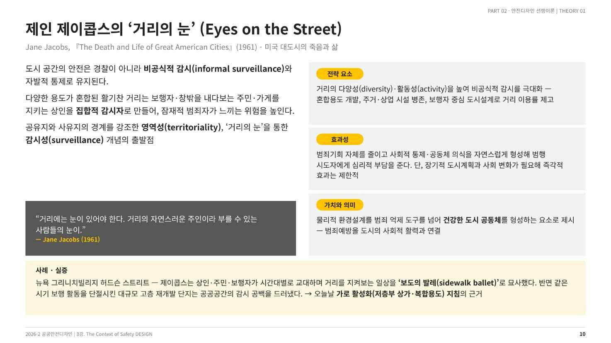<figcaption>제인 제이콥스의 거리의 눈 — 이론의 구조(강의 슬라이드 10쪽)</figcaption></figure>
<figure class="lx-fig"><figcaption>허드슨 스트리트의 ‘보도의 발레’ — 시간대별 거리의 눈(강의 슬라이드 11쪽)</figcaption></figure>
<h3 id="sec-8">2.2 슐로모 엔젤 — 도시계획을 통한 범죄억제</h3>
<p class="lx-src">Schlomo Angel, 『Discouraging Crime Through City Planning』(1968)</p>
<p>슐로모 엔젤은 UC 버클리 박사논문에서, 토지이용 강도가 일정 수준 이상 높아지면 ‘거리의 눈’이 늘어나 공간 안에 충분한 감시자가 존재하게 되고 범죄율이 낮아진다는 것을 실증적으로 보였다. 도시 공간의 활동밀도(use density)는 범죄율에 직접 영향을 미치며, 사람이 드물게 모이는 위험구역(critical intensity zone)을 설계로 제거해야 한다는 것이 이 이론의 핵심이다.</p>
<h4>전략 요소와 효과성</h4>
<p>도시 공간을 활동밀도 기준으로 분석해 인적이 드문 위험구역을 최소화하는 것이 전략의 핵심이다. 설계 단계에서 범죄 취약성을 미리 예측하고 사람들의 활동을 의도적으로 한곳에 집중시킨다. 이는 데이터에 기반한 도시계획으로 범죄 취약구역을 사전에 파악할 객관적 근거를 제공하며, 범죄가 구조화되기 전에 선제적으로 대응할 수 있게 한다. 범죄와 도시형태 사이의 상관관계를 통계적으로 처음 제시했다는 점에서 CPTED의 실증적 기반이 된 이론으로 평가된다.</p>
<aside class="lx-box lx-easy"><span class="lx-box-k">쉽게 말하면</span><ul><li>밤늦게 역에서 집까지 걸을 때 가장 무서운 곳은 완전히 빈 길이 아니라, 가끔 한두 명만 지나가는 길이다.</li></ul></aside>
<p>엔젤은 미국 캘리포니아 오클랜드의 가로범죄를 분석해 이를 확인했다. 활동밀도가 매우 낮은 곳은 표적이 없어 범죄가 적었고, 밀도가 조금 높아지면 표적은 생기지만 목격자가 부족해 범죄가 늘었으며, 밀도가 더 높아지면 비공식 감시가 확보되어 범죄가 다시 줄었다. 즉 텅 빈 거리보다 ‘애매하게 한산한’ 거리가 가장 위험하다는 것이다. 이 결론은 오늘날 야간 보행 취약구간을 진단하고 안심귀갓길 노선을 선정하는 논리로 이어진다.</p>
<figure class="lx-fig">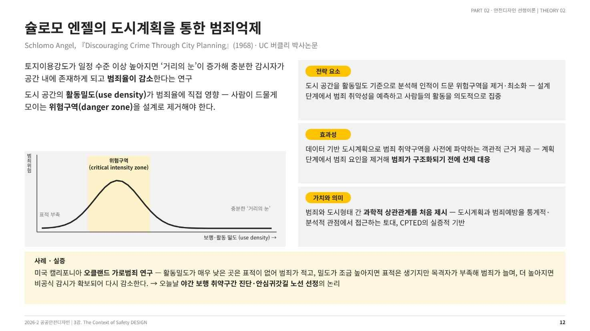<figcaption>슐로모 엔젤의 위험구역 이론 — 활동밀도와 범죄위험의 관계(강의 슬라이드 12쪽)</figcaption></figure>
<figure class="lx-fig"><figcaption>오클랜드 가로범죄 분석 — 텅 빈 거리·드문드문한 거리·붐비는 거리(강의 슬라이드 13쪽)</figcaption></figure>
<h3 id="sec-9">2.3 레이 제프리 — 환경설계를 통한 범죄예방(CPTED)</h3>
<p class="lx-src">C. Ray Jeffery, 『Crime Prevention Through Environmental Design』(1971)</p>
<p>레이 제프리는 1964~1968년 미국 도시에서 벌어진 폭력과 인종 불안에 대응해 구성된 ‘폭력의 원인과 예방에 관한 국가위원회’(1968) 보고서 초안을 바탕으로 저서를 펴내며 ‘CPTED’라는 용어를 처음으로 정의했다. 그는 범죄가 사회적·심리적 요인뿐 아니라 물리적 환경의 특성에도 크게 영향을 받는다고 보고, 건축·조경·도시계획을 통합해 범죄자의 심리에 영향을 미치는 환경을 조작함으로써 범죄 발생 자체를 억제하고자 했다.</p>
<p>이는 범죄의 원인을 개인의 병리나 사회구조에서 찾던 기존 범죄 원인론에서 벗어나, 범죄자가 범행을 결심하는 상황 요인을 직접 조작하는 환경 개입으로 무게중심을 옮긴 전환점이었다. 목표는 범죄 발생 자체를 억제하는 것에 더해 시민의 안전 인식을 높이는 것까지 포함한다.</p>
<aside class="lx-box lx-easy"><span class="lx-box-k">쉽게 말하면</span><ul><li>모기를 한 마리씩 잡는 것(처벌)보다 고인 물을 없애는 것(환경)이 더 근본적인 해법이다.</li></ul></aside>
<p>1970년대 미국 법무부 법집행지원청(LEAA)의 지원으로 웨스팅하우스 CPTED 시범사업이 상업가로·학교·주거지를 대상으로 추진되며 이 이론이 처음 현장에 적용되었다. 조명·보행로·출입구를 개선한 초기 성과는 지역별로 엇갈렸는데, 이 경험은 물리적 개입만으로는 한계가 있으며 주민 참여와 운영 관리를 포함해야 한다는 교훈으로 이어져 이후 CPTED가 발전하는 계기가 되었다.</p>
<figure class="lx-fig"><figcaption>레이 제프리의 CPTED — 범죄 원인론에서 환경 개입으로(강의 슬라이드 14쪽)</figcaption></figure>
<figure class="lx-fig"><figcaption>웨스팅하우스 CPTED 시범사업, 1970년대(강의 슬라이드 15쪽)</figcaption></figure>
<h3 id="sec-10">2.4 오스카 뉴먼 — 방어공간 이론</h3>
<p class="lx-src">Oscar Newman, 『Defensible Space: Crime Prevention Through Urban Design』(1972)</p>
<p>오스카 뉴먼은 방어적 환경을 조성함으로써 범죄예방 효과를 거둘 수 있다는 방어공간(defensible space) 개념을 제시하며, CPTED를 주거환경에 구체적으로 적용했다. 사적–반사적–공공 공간의 경계를 명확히 하면 주민은 영역성을 느끼고 외부인과 자신의 공간을 구분하게 되며, 이렇게 지역의 물리적 특성이 강화될수록 영역의식도 강화되어 범죄가 예방된다는 것이다.</p>
<dl class="lx-cards"><div><dt>1</dt><dd><b>영역성 Territoriality</b><span>공간의 소유 경계를 물리적으로 표현한다.</span></dd></div><div><dt>2</dt><dd><b>자연적 감시 Natural surveillance</b><span>건물 배치와 창의 위치로 바깥을 지켜본다.</span></dd></div><div><dt>3</dt><dd><b>이미지 Image</b><span>잘 관리된 외관이 침입이 어렵다는 인상을 준다.</span></dd></div><div><dt>4</dt><dd><b>안전한 입지 Milieu</b><span>주변 근린과의 연계성을 갖춘 입지를 선택한다.</span></dd></div></dl>
<p>이 네 요소는 주민의 소유의식과 공동체 의식을 높여 자발적인 방어 행동을 이끌어 낸다. 개인 공간과 공공 공간의 경계가 불분명한 아파트나 공공주택에서 특히 효과가 크다. 다만 물리적 요소에만 한정해 범죄와의 관계를 규명했다는 비판도 있었고, 이는 이후 범죄예방디자인 이론이 대안으로 부각되는 배경이 되었다.</p>
<aside class="lx-box lx-easy"><span class="lx-box-k">쉽게 말하면</span><ul><li>기숙사 공용 냉장고의 음식은 자꾸 사라지지만, 내 방 냉장고의 음식은 안전하다 — ‘내 것’이라는 경계가 지키게 만든다.</li></ul></aside>
<p>1950년대 미국 세인트루이스에 들어선 11층 아파트 33개 동의 프루이트-아이고(Pruitt-Igoe) 단지는 ‘현대적 모범 단지’로 지어졌지만, 수백 가구가 함께 쓰는 복도와 계단이 ‘모두의 공간, 곧 누구의 공간도 아닌 곳’이 되면서 범죄와 파손이 만연해 1972년부터 철거되었다. 반면 길 건너의 저층 단지 카 스퀘어 빌리지(Carr Square Village)는 몇 가구가 현관과 마당을 나누어 쓰며 이웃을 서로 알아보고 관리했고, 훨씬 안정적이었다. 뉴먼은 이 차이를 ‘방어공간’의 유무로 설명했으며, 이후 데이턴의 파이브 오크스 단지를 10개의 미니 근린으로 재구성하자 2년 만에 전체 범죄가 약 25%, 폭력범죄가 50% 줄어드는 성과로 이어졌다.</p>
<figure class="lx-fig">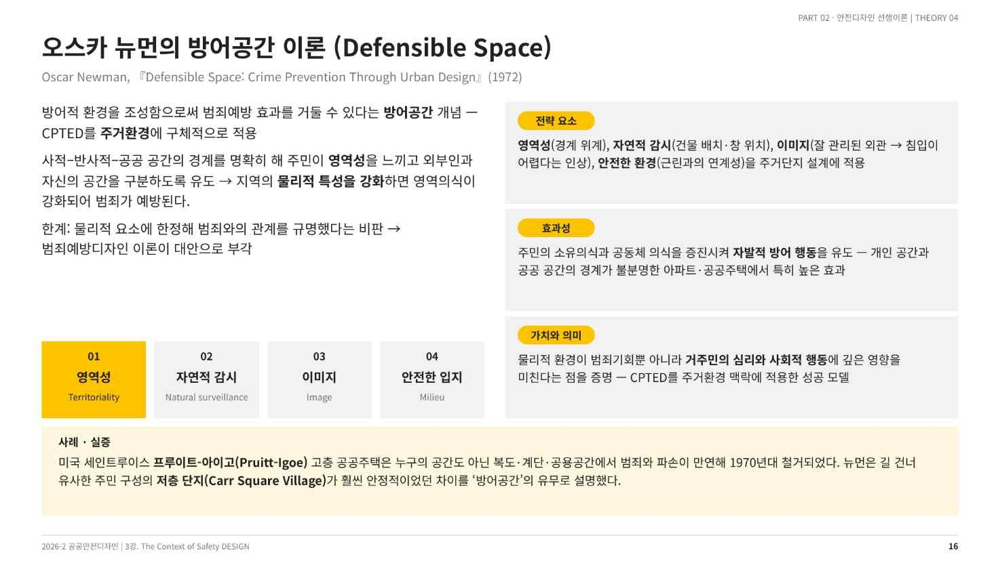<figcaption>오스카 뉴먼의 방어공간 이론 — 네 가지 구성 요소(강의 슬라이드 16쪽)</figcaption></figure>
<figure class="lx-fig"><figcaption>프루이트-아이고 vs 카 스퀘어 빌리지(강의 슬라이드 17쪽)</figcaption></figure>
<h3 id="sec-11">2.5 코헨 &amp; 펠슨 — 일상활동이론</h3>
<p class="lx-src">Lawrence E. Cohen &amp; Marcus Felson, “Social Change and Crime Rate Trends” (1979)</p>
<p>코헨과 펠슨은 범죄자의 ‘범행 동기’를 중심에 두었던 기존 이론과 달리, ‘장소’를 중심으로 한 기회적 요인에 주목했다. 이들에 따르면 동기화된 범죄자, 적합한 표적, 유능한 보호자의 부재라는 세 가지 조건이 개인의 생활 패턴과 맞물려 같은 시간과 공간에서 합치될 때 범죄가 발생한다.</p>
<p>따라서 세 요소 가운데 하나 이상을 통제하면 범죄를 막을 수 있다. 대상물 강화(target hardening), 감시의 증진, 그리고 주민·관리자·이용자로서 보호자 역할을 강화하는 것이 대표적인 통제 지점이다. 이 이론은 범죄예방을 범죄자의 심리나 사회적 배경을 다루는 문제가 아니라 일상 환경을 관리하는 실용적 접근으로 전환시켰으며, 이후 상황적 범죄예방과 CPTED의 이론적 기반이 되었다.</p>
<aside class="lx-box lx-easy"><span class="lx-box-k">쉽게 말하면</span><ul><li>불이 나려면 연료·산소·열이 함께 있어야 하듯, 범죄도 범죄자·표적·보호자 부재라는 세 요소가 한자리에 모여야 일어난다.</li></ul></aside>
<p>코헨과 펠슨은 1960~70년대 미국에서 경제가 성장했는데도 범죄가 오히려 늘어난 ‘풍요의 역설’을 이 이론으로 설명했다. 맞벌이와 여가활동이 늘면서 낮 시간에 빈집(보호자 부재)이 늘었고, 텔레비전·오디오 같은 가볍고 값비싼 내구재(적합한 표적)가 널리 보급되면서 주거침입이 늘어났다는 것이다. 범죄자의 수가 늘지 않았는데도 생활방식의 변화가 범죄의 기회를 만들어 낸 셈이다.</p>
<figure class="lx-fig"><figcaption>코헨 &amp; 펠슨의 일상활동이론 — 범죄 발생의 세 조건(강의 슬라이드 18쪽)</figcaption></figure>
<figure class="lx-fig"><figcaption>1960~70년대 미국의 ‘풍요의 역설’(강의 슬라이드 19쪽)</figcaption></figure>
<h3 id="sec-12">2.6 브랜팅햄 &amp; 브랜팅햄 — 환경범죄학이론</h3>
<p class="lx-src">Paul J. Brantingham &amp; Patricia L. Brantingham, 『Environmental Criminology』(1981)</p>
<p>브랜팅햄 부부는 범죄가 법, 대상물, 범죄자, 장소라는 네 가지 요소로 구성되며, 그중에서도 ‘장소’가 가장 중요하게 부각된다고 보았다. 범죄자는 집·직장·학교·유흥가처럼 일상적으로 오가는 경로 안의 인지공간(awareness space)에서 환경적 단서를 학습하고 그 안에서 범행 장소를 선택한다는 범죄패턴이론을 제시했으며, 이는 그동안 범죄학과 도시건축학에서 따로 진행되던 범죄 연구를 하나로 통합하는 시도였다.</p>
<dl class="lx-cards"><div><dt>결절점</dt><dd><b>Node</b><span>집·직장·학교·유흥가 등 일상 활동의 거점.</span></dd></div><div><dt>경로</dt><dd><b>Path</b><span>결절점을 잇는 일상적인 이동 동선.</span></dd></div><div><dt>경계</dt><dd><b>Edge</b><span>서로 다른 토지이용이 만나 외부인이 섞이는 곳.</span></dd></div></dl>
<p>이 개념들을 이용해 범죄 유발 장소(crime generators)와 범죄 유인 장소(crime attractors)를 식별하고 이동 패턴을 분석하면 범죄 핫스팟을 예측할 수 있다. 도시계획과 토지이용을 통해 유발 요소를 제거하거나 분산시키는 것이 이 이론이 제시하는 전략이다. 범죄가 무작위가 아니라 공간적·시간적 특성을 지닌다는 것을 과학적으로 증명하고 이를 지리정보시스템(GIS)과 결합시킴으로써, CPTED가 개별 건물을 넘어 도시 구조 전체를 다루어야 함을 시사했다.</p>
<aside class="lx-box lx-easy"><span class="lx-box-k">쉽게 말하면</span><ul><li>우리가 늘 다니는 길의 가게만 기억하듯, 범죄자도 자기가 잘 아는 길 위에서 기회를 찾는다.</li></ul></aside>
<p>셔먼 등(Sherman, Gartin &amp; Buerger, 1989)은 미국 미니애폴리스의 1년치 경찰 신고 약 32만 건을 주소·교차로 단위로 지도에 표시해 분석했다. 그 결과 전체 장소의 3%에서 전체 신고의 절반이 발생했고, 강도 사건은 전체 장소의 2.2%에 모두 집중되어 있었다. 범죄가 도시 전체에 고르게 퍼져 있지 않고 특정 지점에 몰린다는 이 ‘범죄의 장소 집중’ 현상은, 한정된 예산과 인력을 핫스팟에 우선 투입해야 한다는 정책적 함의를 준다. 국내에서도 범죄 발생 분석과 생활안전지도 같은 공간정보를 활용해 CPTED 사업 대상지를 선정하고 있다.</p>
<figure class="lx-fig"><figcaption>브랜팅햄의 환경범죄학 — 결절점·경로·경계(강의 슬라이드 20쪽)</figcaption></figure>
<figure class="lx-fig"><figcaption>미니애폴리스 핫스팟 분석, Sherman 외(1989)(강의 슬라이드 21쪽)</figcaption></figure>
<h3 id="sec-13">2.7 로널드 클라크 — 상황적 범죄예방이론</h3>
<p class="lx-src">Ronald V. Clarke, Situational Crime Prevention (1980·1983) — 영국 내무부 연구</p>
<p>1970년대 이후 영국에서 범죄 문제가 심각한 사회적 화두로 떠오르자, 클라크와 메이휴(Mayhew)는 범죄학에 기반해 상황적 범죄예방이론을 정립했다. 이 이론은 특정 범죄 유형을 대상으로 체계적이고 지속적으로 환경을 설계·관리해, 잠재적 범죄자가 인식하는 검거 위험성과 범행의 어려움을 높이거나 범행으로 얻는 보상과 명분을 줄이는 것을 목표로 한다.</p>
<dl class="lx-cards"><div><dt>1</dt><dd><b>노력 증가</b><span>범죄행위에 요구되는 노력이나 비용을 늘린다.</span></dd></div><div><dt>2</dt><dd><b>위험 증가</b><span>범죄행위가 발각될 위험성을 높인다.</span></dd></div><div><dt>3</dt><dd><b>보상 감소</b><span>범죄행위를 통해 얻는 이익을 줄인다.</span></dd></div><div><dt>4</dt><dd><b>변명 제거</b><span>범죄행위에 대한 죄의식이나 수치심을 높인다.</span></dd></div></dl>
<p>이 네 가지 기본 원칙은 처음 16가지 범죄기회 감소 기법으로 구체화되었고(Clarke &amp; Homel, 1997), 이후 다섯 번째 원칙인 ‘도발 감소’가 더해져 5개 원칙 아래 25가지 기법으로 확장되었다(Cornish &amp; Clarke, 2003). 지하철 역사 안에 ‘지켜보고 있다’는 경찰 포스터를 붙이는 것처럼, 잠재적 범죄자가 인식하는 감시 위험을 높이는 심리적 장치도 이 전략에 포함된다.</p>
<h4>효과성과 가치</h4>
<p>상황적 범죄예방은 특정 범죄 유형에 즉각적이고 직접적인 효과를 낸다. 자물쇠를 강화하면 절도가, 공중화장실의 조명을 개선하면 성범죄가 줄어드는 식이다. 근본 원인을 치료하기보다 실질적인 범죄 감소를 목표로 하며, 범죄예방을 공학적·기술적 관점에서 접근해 전략의 구체성과 실용성을 극대화했다는 평가를 받는다.</p>
<aside class="lx-box lx-easy"><span class="lx-box-k">쉽게 말하면</span><ul><li>다이어트에는 굳은 의지보다 집에 과자를 두지 않는 것이 더 효과적이다 — 마음보다 상황을 바꾼다.</li></ul></aside>
<p>자동차 도난을 막기 위해 도입된 핸들 잠금장치는 이 이론을 뒷받침하는 대표 사례다. 독일은 1963년 신차와 구형차 모두에 잠금장치를 의무화했고, 그 결과 훔칠 수 있는 차 자체가 사라지면서 차량 절도가 크게 줄었다. 반면 영국은 1971년 신차에만 의무화했는데, 도둑들이 잠금장치가 없는 헌 차로 옮겨가면서 전체 절도는 한동안 줄지 않는 범죄 전이(displacement) 현상이 나타났다. 한편 영국의 가정용 가스 해독화(1960~70년대) 사례는 이와 대조된다. 일산화탄소가 포함된 도시가스가 천연가스로 대체되자 가스를 이용한 자살이 사라졌는데, 이 수단이 다른 수단으로 완전히 옮겨가지 않아 전체 자살률도 함께 감소했다(Clarke &amp; Mayhew, 1988). 이는 ‘기회를 막아도 다른 곳으로 옮겨갈 뿐’이라는 전이 비판에 대한 대표적인 반증으로 꼽힌다. 두 사례를 비교하면, 기법을 대상 전체에 빠짐없이 일관되게 적용해야 효과가 나타난다는 교훈을 얻을 수 있다.</p>
<figure class="lx-fig">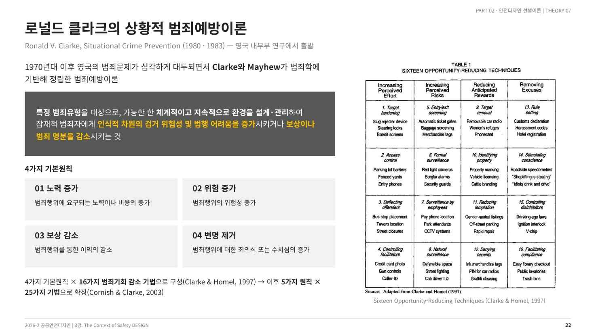<figcaption>로널드 클라크의 상황적 범죄예방 — 4가지 기본원칙(강의 슬라이드 22쪽)</figcaption></figure>
<figure class="lx-fig"><figcaption>상황적 범죄예방의 전략과 실증 사례(강의 슬라이드 23쪽)</figcaption></figure>
<figure class="lx-fig"><figcaption>독일과 영국의 핸들 잠금장치 비교(강의 슬라이드 24쪽)</figcaption></figure>
<figure class="lx-fig">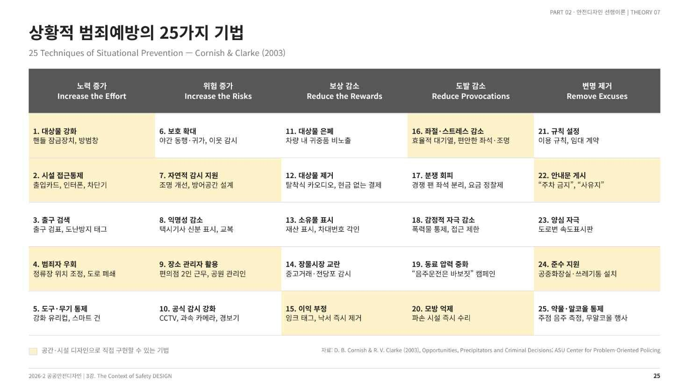<figcaption>상황적 범죄예방의 25가지 기법(Cornish &amp; Clarke, 2003)(강의 슬라이드 25쪽)</figcaption></figure>
<h3 id="sec-14">2.8 코니시 &amp; 클라크 — 합리적 선택이론</h3>
<p class="lx-src">Derek B. Cornish &amp; Ronald V. Clarke, 『The Reasoning Criminal』(1986)</p>
<p>코니시와 클라크는 범죄를 ‘범죄자의 이성적 판단에 따라 발생하는 행위’로 규정했다. 다만 이 합리성은 완전한 것이 아니라 정보와 시간의 제약 속에서 이루어지는 제한된 합리성(bounded rationality)이다.</p>
<p>범죄자는 자신과 주변 상황을 종합해 범행으로 얻을 이익(보상)과 치를 비용(노력·체포 위험·처벌)을 저울질한 뒤 범행 여부를 결정한다. 예를 들어 강도가 경찰 순찰이 수시로 이루어짐을 확인하고 이득보다 발각 위험이 크다고 판단하면 범행을 포기하게 된다.</p>
<p>이 이론은 범죄자를 합리적 의사결정자로 가정하고, 범행 전 비용과 이익을 계산하는 그 과정에 개입한다. 안전 디자인 전략은 결국 범죄의 비용을 높이고 이익을 낮추는 장치인 셈이다. 이는 CCTV와 같은 감시 장치가 왜 효과를 내는지를 설명하는 근거이기도 하다 — CCTV는 ‘잡힐 확률’이라는 비용을 높게 인식시켜 범행 선택 자체를 철회하게 만든다. 범죄 동기를 상황적 선택으로 재해석한 이 이론은 CPTED를 비롯한 모든 상황적 범죄예방 전략의 이론적 토대이자 정당성이 되었다.</p>
<aside class="lx-box lx-easy"><span class="lx-box-k">쉽게 말하면</span><ul><li>과속카메라 앞에서만 속도를 줄이는 운전자처럼, 사람은 행동하기 전에 ‘걸릴 확률’을 계산한다.</li></ul></aside>
<p>웰시와 패링턴(Welsh &amp; Farrington, 2009)의 체계적 문헌고찰은 이 이론을 뒷받침한다. 공공장소 CCTV는 범죄를 평균 16% 감소시켰지만, 출입구가 정해져 있고 시야가 밝은 주차장에서는 51%까지 감소시켰다. 반면 넓은 도심 공공장소에서는 효과가 작았는데, 이는 조명 개선 등 다른 개입과 결합되었을 때 효과가 컸다는 것을 보여 준다. 즉 감시 장치는 ‘보는 사람’이 존재하는가가 아니라, 범죄자가 스스로 인식하는 위험을 실제로 바꿀 수 있는가에 따라 작동한다. 바닥에 ‘CCTV 촬영 중’이라는 문구를 비추는 조명이나, 밖에서 훤히 들여다보이는 편의점 계산대 배치도 같은 원리를 이용한 것이다.</p>
<figure class="lx-fig">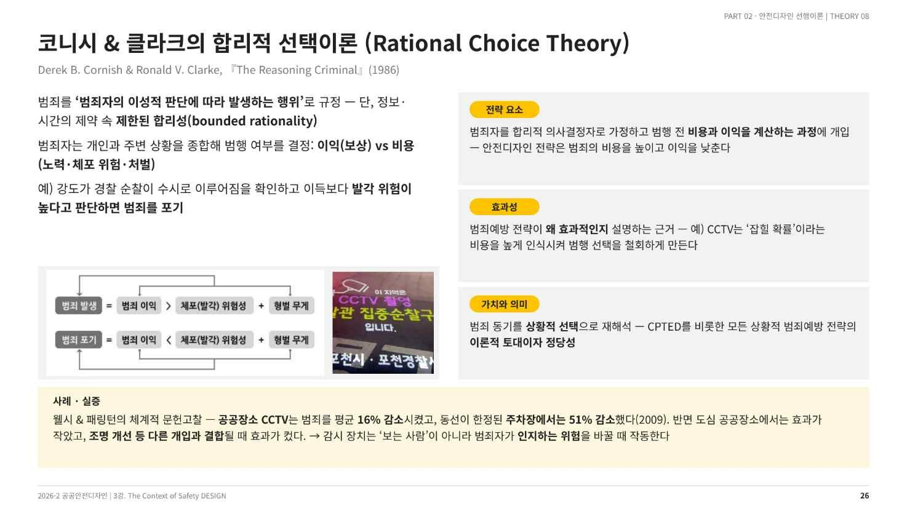<figcaption>코니시 &amp; 클라크의 합리적 선택이론 — 비용과 이익의 계산(강의 슬라이드 26쪽)</figcaption></figure>
<figure class="lx-fig">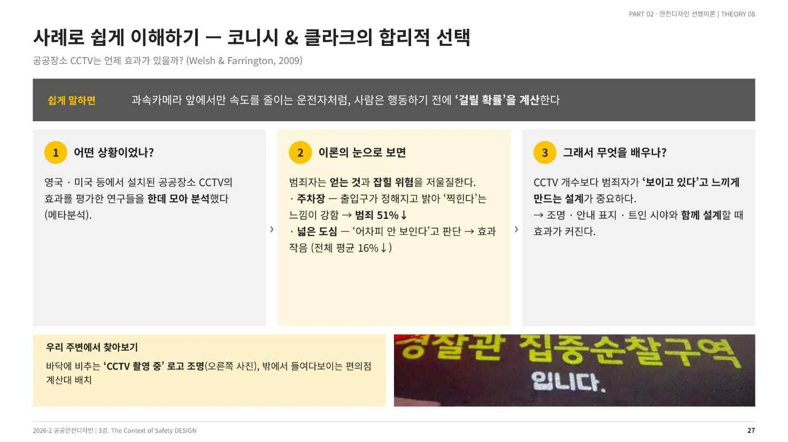<figcaption>공공장소 CCTV는 언제 효과가 있는가, Welsh &amp; Farrington(2009)(강의 슬라이드 27쪽)</figcaption></figure>
<h3 id="sec-15">2.9 선행이론 종합 — CPTED 원리와의 연결</h3>
<p>여덟 이론을 하나의 그림으로 겹쳐 보면, 1세대 CPTED의 5대 원리는 결코 한 사람의 아이디어가 아니라 도시계획· 건축(감시·활동)과 건축적 방어공간(영역·접근), 그리고 범죄학의 상황·의사결정 이론(기회·선택)이 함께 수렴해 만들어 낸 결과임을 알 수 있다. 이 계보를 이해하면, 다음 PART에서 다룰 CPTED 5대 원리 하나하나가 어떤 이론적 뿌리를 갖는지 자연스럽게 연결해서 볼 수 있다.</p>
<figure class="lx-fig"><figcaption>선행이론 종합 — 도시계획·건축·범죄학이 수렴한 CPTED(강의 슬라이드 28쪽)</figcaption></figure>
<header class="lx-part" id="part-16"><p class="lx-kicker">Part 3</p><h2>CPTED의 이해</h2><p class="lx-lead">발생배경과 역사 · 1~3세대 CPTED · 해외 표준화 정책 · 국내 가이드라인과 사례</p></header>
<p>Part 2에서 살펴본 여덟 이론은 결국 하나의 개념, CPTED(Crime Prevention Through Environmental Design, 환경설계를 통한 범죄예방)로 수렴한다. Part 3에서는 이 개념이 어떻게 정의되고, 세대를 거치며 어떻게 확장되어 왔으며, 각국에서 어떤 제도로 자리 잡았는지를 살펴본다.</p>
<h3 id="sec-17">3.1 CPTED란 무엇인가</h3>
<p>CPTED는 건축·도시·공공디자인 등 환경설계를 통해 범죄가 발생할 기회를 줄이고, 공간을 이용하는 사람들의 범죄 불안감을 낮추어 삶의 질을 높이는 종합적인 예방 전략이다. 개념은 시간이 흐르며 조금씩 표현을 달리해 왔다.</p>
<dl class="lx-cards"><div><dt>CPTED</dt><dd><b>Crime Prevention through Environmental</b><span>Design 환경설계를 통한 범죄예방. 물리적 환경 설계로 범죄 기회를 차단한다.</span></dd></div><div><dt>CRTED</dt><dd><b>Crime Reduction through Environmental</b><span>Design 디자인을 통한 간접적이고 예방적인 환경안전전략. 완전한 ‘방지’보다 현실적인 ‘감소’와 불안감 완화를 강조한다.</span></dd></div><div><dt>DSS</dt><dd><b>Designing Safer Spaces</b><span>공간안전디자인. 3세대 CPTED로서, 범죄를 넘어 안전·지속가능성·삶의 질까지 다룬다.</span></dd></div></dl>
<p>표현은 달라졌지만 기본 원리는 같다. 공공장소 이용자는 환경이 제공하는 단서를 통해 안전한 장소와 위험한 장소를 인지한다. CPTED는 이러한 환경심리에 초점을 맞추어, 범죄행위를 촉발하는 공간 요소를 제거하는 방향으로 공간을 디자인하는 것을 기본 원리로 삼는다.</p>
<figure class="lx-fig">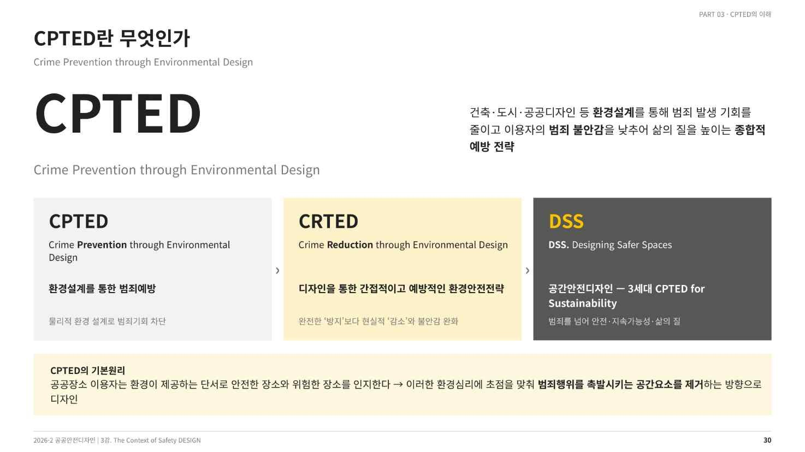<figcaption>CPTED 개념의 확장 — CPTED · CRTED · DSS(강의 슬라이드 30쪽)</figcaption></figure>
<h3 id="sec-18">3.2 CPTED의 발생배경과 역사</h3>
<p>도시의 심각한 사회문제로 대두된 범죄에 대해 경찰력에 의한 단속이나 범죄자 처벌·교육만으로는 해결에 한계가 있다는 인식이 CPTED가 등장한 배경이다. 이에 따라 범죄의 기회를 줄일 목적으로 건물이나 지역 등 환경이 지닌 범죄 유발 요인을 분석하고 통제하려는 환경범죄학이 대두되었다.</p>
<p>이후 CPTED는 다음과 같은 흐름으로 발전해 왔다.</p>
<div class="lx-table"><table><thead><tr><th>연도 주요 사건</th></tr></thead><tbody><tr><td>1961 제인 제이콥스, 『The Death and Life of Great</td></tr><tr><td>American Cities』 — 도시 재개발에 따른 범죄 문제의</td></tr><tr><td>해법을 도시 설계방법에서 찾으며 흐름의 출발점이 됨</td></tr><tr><td>1971 레이 제프리, 『Crime Prevention Through</td></tr><tr><td>Environmental Design』 — 물리적 환경 개선을 통한</td></tr><tr><td>범죄 통제를 주장</td></tr><tr><td>1972 오스카 뉴먼, 『Defensible Space』 — 환경설계와</td></tr><tr><td>범죄의 상관관계를 연구, 영역성·자연적 감시·이미지·</td></tr><tr><td>입지조건 네 요소에 의한 사회통제의 실효성을 주장</td></tr><tr><td>1980 학술적 접근을 넘어 정책으로 발전 — 영국 내무부가</td></tr><tr><td>클라크의 상황적 범죄예방이론을 활용한 「Designing</td></tr><tr><td>out Crime(범죄퇴치디자인)」 프로그램을 최초 실시</td></tr><tr><td>1990 CPTED를 범죄예방정책에 실용화한 방안 등장 — 영국</td></tr><tr><td>경찰 주도의 방범설계 인증 Secured by</td></tr><tr><td>Design(1989~)이 확산</td></tr><tr><td>2000 물리적 환경설계를 강조하는 1세대 CPTED를 넘어,</td></tr><tr><td>사회·문화적 요소를 강조하는 2세대 CPTED로 발전</td></tr></tbody></table></div>
<figure class="lx-fig">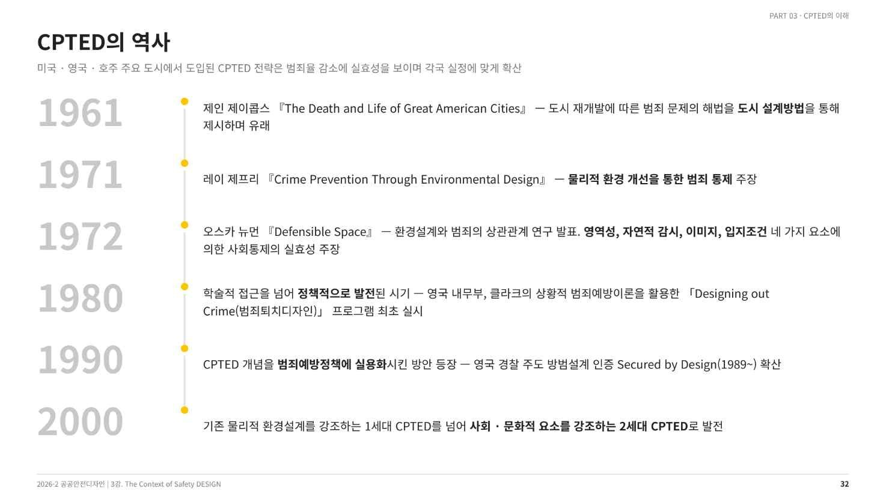<figcaption>CPTED의 역사 — 1961년부터 2000년대까지(강의 슬라이드 32쪽)</figcaption></figure>
<h3 id="sec-19">3.3 1 · 2 · 3세대 CPTED</h3>
<p>CPTED는 물리적 환경을 다루는 1세대에서 사회적 환경을 포괄하는 2세대로, 다시 지속가능한 삶의 질을 지향하는 3세대로 발전해 왔다. 1세대가 감시·접근통제 같은 물리적 설계 요소에 집중했다면, 2세대는 주민의 책임감과 참여, 청소년 문화, 모임 장소처럼 사회적·문화적 요소를 더했고, 3세대는 이를 지속가능성이라는 더 큰 틀 안에서 통합한다.</p>
<figure class="lx-fig">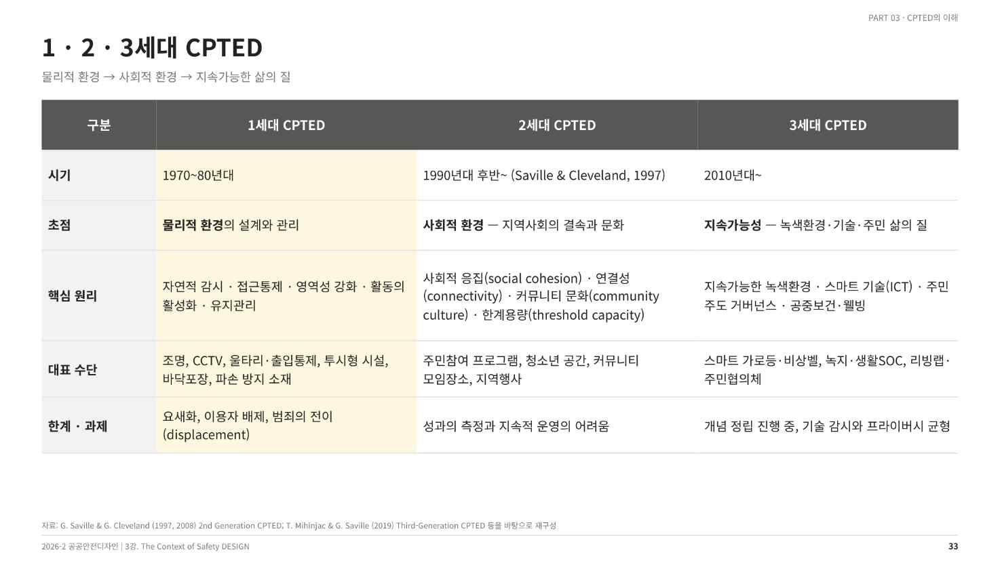<figcaption>1·2·3세대 CPTED의 발전 — 물리적 환경에서 지속가능한 삶의 질로(강의 슬라이드 33쪽)</figcaption></figure>
<h3 id="sec-20">3.4 CPTED Framework — CPTED Circle</h3>
<p>1세대와 2세대 CPTED의 원리를 하나의 원형 구조로 정리하면, 물리적 환경을 다루는 다섯 원리와 사회적 환경을 다루는 다섯 원리가 서로 맞물려 있음을 볼 수 있다.</p>
<dl class="lx-cards"><div><dt>1~5</dt><dd><b>1세대 — 물리적 환경</b><span>자연적 감시(가시성 최대화) · 접근통제(위험요소 차단) · 영역성 강화(공적 소유가치) · 공간 활성화(사용성· 활력) · 유지관리(지속가능한 환경)</span></dd></div><div><dt>6~10</dt><dd><b>2세대 — 사회적 환경</b><span>주민 책임감 부여(연대감) · 주민 참여(자율성·비용 절감) · 청소년 문화(새로운 문화) · 도시 모임장소 제공 (활동성) · 휴먼스케일의 개발</span></dd></div></dl>
<figure class="lx-fig">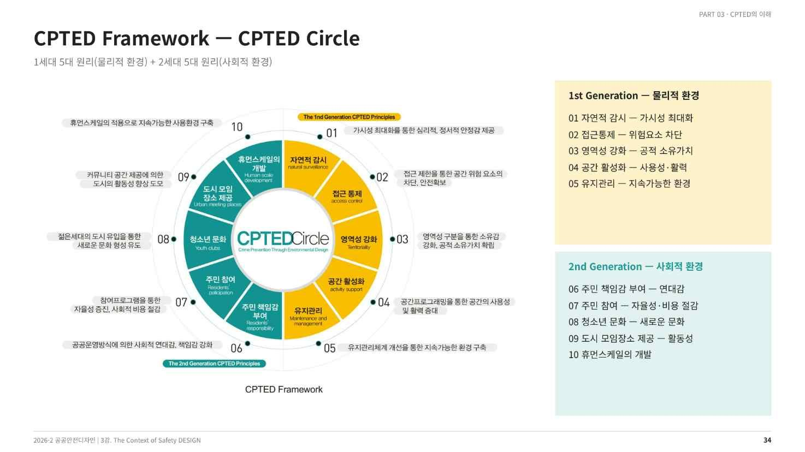<figcaption>CPTED Framework, CPTED Circle — 1·2세대 10대 원리(강의 슬라이드 34쪽)</figcaption></figure>
<h3 id="sec-21">3.5 CPTED 표준화 정책 — 해외</h3>
<p>여러 나라는 CPTED 관련 법규와 조례를 제정해 제도의 기반을 마련하고, 인증제 실시·체크리스트 마련·전문 경찰관에 대한 평가 권한 부여 등으로 이를 뒷받침해 왔다.</p>
<div class="lx-table"><table><thead><tr><th>국가 제도의 특징</th></tr></thead><tbody><tr><td>영국 지방정부가 주민과 지역 전문가의 경험을 반영해</td></tr><tr><td>방범진단을 실시하고, ‘Crime Concern’ 매뉴얼을</td></tr><tr><td>활용한다. 방범환경설계제도 Secured By Design을</td></tr><tr><td>통해 SBD 인증서와 로고를 부착한다.</td></tr><tr><td>미국 범죄나 사고를 사전에 예측해 방지하는 4차원 감시</td></tr><tr><td>카메라를 개발했다. 애리조나 주는 내부 공간·조명·</td></tr><tr><td>조경·출입구·표지판 설치 기준과 규격을 두고, 워싱턴</td></tr><tr><td>주는 야외조명·주차장·보행로·공원 조명 등 자연적 감시</td></tr><tr><td>관련 원칙과 의무를 조례로 규정한다.</td></tr><tr><td>네덜란드 도시계획과 조경에 중점을 두고 범죄자의 시각에서</td></tr><tr><td>문제와 해결방안을 구체화한다. ‘Police Label Secure</td></tr><tr><td>Housing’ 인증마크를 부여하며 사회안전디자인</td></tr><tr><td>체크리스트를 운영한다.</td></tr><tr><td>일본 법무부가 주택과 교통수단에 대한 CPTED 연구를</td></tr><tr><td>수행한다. 아이치 현은 범죄예방기법을 적용한</td></tr><tr><td>‘방범모델 단지’ 지정 제도를 운영하고, 방범성능이</td></tr><tr><td>좋은 부품에는 CP 마크를 부착한다.</td></tr></tbody></table></div>
<p>영국의 Secured by Design(1989~)은 경찰이 주도하는 방범설계 인증제도로, 인증을 받은 주거단지가 비인증 단지에 비해 주거침입 범죄 발생률이 낮다는 평가가 반복적으로 보고되었다(Armitage, 2000; Armitage &amp; Monchuk, 2011).</p>
<figure class="lx-fig"><figcaption>CPTED 표준화 정책 — 영국·미국·네덜란드·일본(강의 슬라이드 35쪽)</figcaption></figure>
<h3 id="sec-22">3.6 국내 가이드라인과 제도화 흐름</h3>
<p>국내에서는 실무자를 위한 「범죄예방 환경설계 가이드북」(국토교통부·법무부·건축도시공간연구소, 2015)을 비롯해, 서울특별시의 뉴타운 CPTED 설계지침, 경기도의 취약지역 범죄예방을 위한 공공서비스디자인 매뉴얼, 경찰청의 환경설계를 통한 범죄예방(CPTED) 방안이 마련되어 있다. 이 흐름은 2005년 경찰청 설계지침에서 출발해 신도시·교육·주거환경 사업으로 확산되었고, 2015년 고시를 통해 법적 기준으로 제도화되었다.</p>
<div class="lx-table"><table><thead><tr><th>연도 주체 내용</th></tr></thead><tbody><tr><td>2005 경찰청 「범죄예방을 위한 설계 지침」</td></tr><tr><td>2005 판교신도시 범죄예방 설계지침을 신도시 계획에</td></tr><tr><td>적용</td></tr><tr><td>2012 서울시 범죄예방디자인 사업 — 염리동</td></tr><tr><td>‘소금길’</td></tr><tr><td>2013 국토교통부 「건축물의 범죄예방 설계</td></tr><tr><td>가이드라인」</td></tr><tr><td>2014 건축법 제53조의2 ‘건축물의 범죄예방’</td></tr><tr><td>신설</td></tr><tr><td>2015 국토교통부 「범죄예방 건축기준」 고시 ·</td></tr><tr><td>환경설계 가이드북</td></tr><tr><td>2016 공공디자인진흥법 「공공디자인의 진흥에 관한 법률」</td></tr><tr><td>시행</td></tr><tr><td>2018 문화체육관광부 제1차 공공디자인 진흥종합계획</td></tr><tr><td>— 전략 1 ‘생활안전’</td></tr></tbody></table></div>
<p>「범죄예방 건축기준」은 500세대 이상 공동주택 등에는 의무기준을, 단독주택 등에는 권장기준을 제시한다. 이로써 안전디자인은 선택적 ‘권고’에서 건축허가의 ‘기준’으로 자리를 옮겼고, 공공디자인 진흥종합계획을 통해 공공공간 전반을 아우르는 정책 과제로 확장되었다.</p>
<figure class="lx-fig"><figcaption>국내 CPTED 가이드라인 — 국토교통부·서울시·경기도·경찰청(강의 슬라이드 36쪽)</figcaption></figure>
<figure class="lx-fig">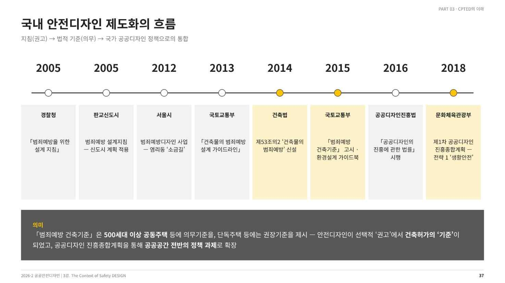<figcaption>국내 안전디자인 제도화의 흐름, 2005~2018(강의 슬라이드 37쪽)</figcaption></figure>
<h3 id="sec-23">3.7 국내 사례</h3>
<h4>사례 ① 수원시 안전 골목만들기 10원칙</h4>
<p>한국공공디자인학회가 2016년 7월 발표한 ‘안전 골목만들기 10원칙’은 누구나 쉽게 이해하고 적용할 수 있도록 CPTED 원리를 열 가지 실천 항목으로 풀어낸 것이다.</p>
<dl class="lx-cards"><div><dt>1</dt><dd><b>잘 보이게 하기</b><span>→ 자연적 감시</span></dd></div><div><dt>2</dt><dd><b>정보 제공하기</b><span>→ 자연적 감시</span></dd></div><div><dt>3</dt><dd><b>공간 활성화하기</b><span>→ 활동 활성화</span></dd></div><div><dt>4</dt><dd><b>거리 밝히기</b><span>→ 자연적 감시</span></dd></div><div><dt>5</dt><dd><b>예쁘게 꾸미기</b><span>→ 영역성 · 이미지</span></dd></div><div><dt>6</dt><dd><b>거리 비우기</b><span>→ 유지관리</span></dd></div><div><dt>7</dt><dd><b>부드럽게 표현하기</b><span>→ 영역성</span></dd></div><div><dt>8</dt><dd><b>막힌 공간 개방하기</b><span>→ 감시 · 접근통제</span></dd></div><div><dt>9</dt><dd><b>유지 관리하기</b><span>→ 유지관리</span></dd></div><div><dt>10</dt><dd><b>함께 가꾸기</b><span>→ 주민 참여(2세대)</span></dd></div></dl>
<p>이 10원칙은 2016년 대한민국 공공디자인대상 학술부문을 수상했고, 수원시는 제1회 대한민국 범죄예방대상 CPTED 우수 지자체로 선정되었다.</p>
<figure class="lx-fig"><figcaption>수원시 안전 골목만들기 10원칙(강의 슬라이드 38쪽)</figcaption></figure>
<h4>사례 ② 서울시 마포구 염리동 ‘소금길’</h4>
<p>2012년 추진된 서울시 범죄예방디자인 프로젝트인 염리동 ‘소금길’은 국내 CPTED 기반 공공디자인 사업이 확산되는 계기가 되었다. 사업 5개월 후 주민 약 200명을 대상으로 한 서울시 설문조사에서, 범죄에 대한 두려움이 13.6% 줄었고 응답자의 56.5%가 “범죄로부터 안심감이 생겼다”고 답했다. 인식 개선에 더해 소금길 주변의 절도 발생 감소도 함께 보고되었다.</p>
<p>소금길 사업은 물리적 개선(1세대 CPTED)과 주민 참여(2세대 CPTED)를 결합한 모델이라는 점에서 의미가 있으며, 이후 서울시 자치구와 다른 지자체의 범죄예방디자인 사업으로 확산되었다.</p>
<figure class="lx-fig"><figcaption>서울시 마포구 염리동 소금길 — 사업 전후 주민 인식 변화(강의 슬라이드 39쪽)</figcaption></figure>
<header class="lx-part" id="part-24"><p class="lx-kicker">Part 4</p><h2>CPTED 5대 원리 상세</h2><p class="lx-lead">보이게 · 드나들게 · 읽히게 · 머물게 · 유지되게</p></header>
<p>Part 4에서는 앞서 살펴본 이론과 역사를 바탕으로, 현장에서 실제로 적용하는 CPTED 1세대 5대 원리를 하나씩 자세히 살펴본다. 다섯 원리는 각각 ‘보이게(감시) · 드나들게(통제) · 읽히게(영역) · 머물게(활동) · 유지되게(관리)’라는 한마디로 요약할 수 있다.</p>
<figure class="lx-fig">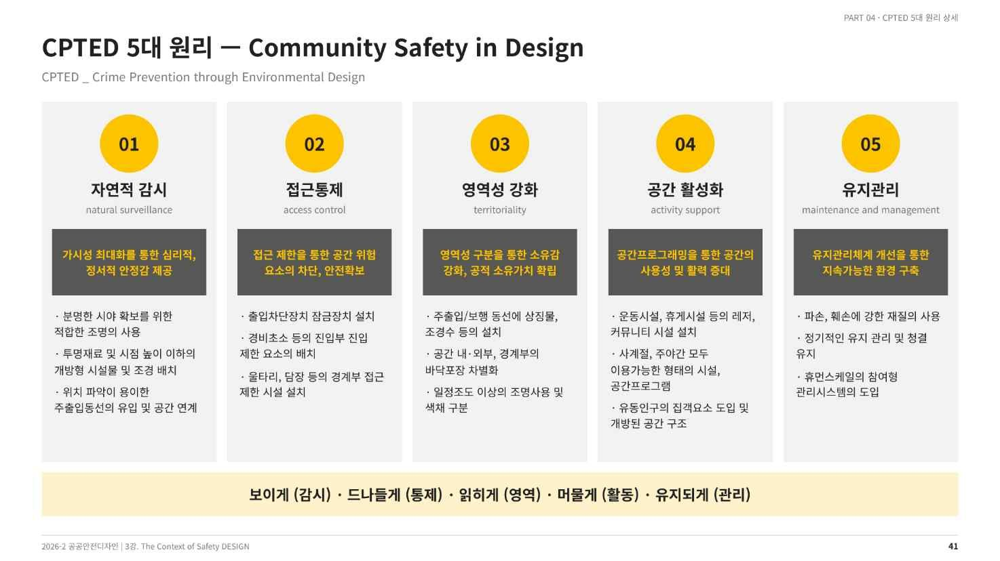<figcaption>CPTED 5대 원리 개관 — Community Safety in Design(강의 슬라이드 41쪽)</figcaption></figure>
<h3 id="sec-25">4.1 자연적 감시 (Natural Surveillance)</h3>
<p>자연적 감시는 가시성을 최대화해 공간을 이용하는 사람에게 심리적·정서적 안정감을 준다. 건축물과 시설물의 배치·디자인을 통해 외부인의 행동을 자연스럽게 볼 수 있게 함으로써, 범죄자에게는 발각의 위험을, 이용자에게는 안심감을 주는 원리다. 결국 사람의 눈이 곧 가장 효과적인 방범시설이라는 것이다. 이 원리는 제이콥스·엔젤· 뉴먼·코헨과 펠슨의 이론에서 공통으로 확인된다.</p>
<h4>디자인 전략</h4>
<ul class="lx-list"><li>분명한 시야 확보를 위한 적합한 조명을 사용한다 — 균일한 밝기, 눈부심 방지, 얼굴 식별이 가능한 조도.</li><li>투명한 재료와 시점 높이 이하의 개방형 시설물·조경을 배치한다 — 투시형 담장, 낮은 관목.</li><li>위치 파악이 쉬운 주출입 동선을 만들고 공간을 서로 연계한다.</li><li>건물의 창·출입구·발코니를 가로와 공용공간을 향해 배치한다.</li><li>사각지대는 반사경이나 CCTV로 보완한다 — 다만 이는 자연적 감시를 보완하는 수단일 뿐, 대체하는 수단은 아니다.</li></ul>
<aside class="lx-box lx-check"><span class="lx-box-k">Check point</span><b>체크 포인트 — 현장에서 이렇게 질문하자</b><ul><li>야간에도 전방의 사람을 알아볼 수 있을 만큼 밝고 균일한가?</li><li>주변 건물·상점·보행자의 시선이 이 공간에 닿는가?</li><li>숨을 수 있는 은신처나 시야를 가리는 시설물·식재가 있는가?</li></ul></aside>
<figure class="lx-fig">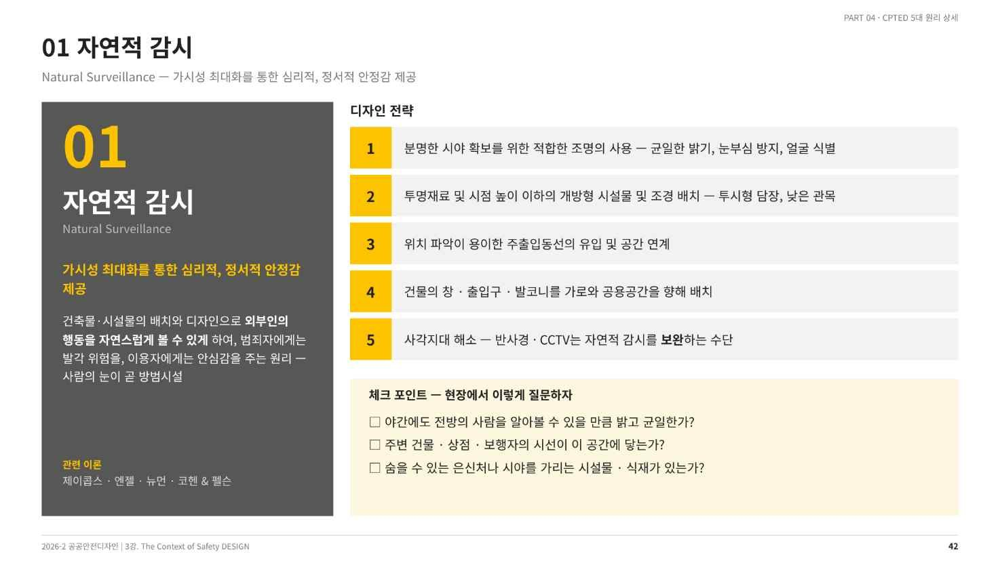<figcaption>자연적 감시 — 정의와 다섯 가지 디자인 전략(강의 슬라이드 42쪽)</figcaption></figure>
<p>웰시와 패링턴(2008)의 체계적 문헌고찰은 미국과 영국의 여러 평가연구를 종합해, 가로조명을 개선한 지역의 범죄가 평균 21% 감소했음을 보였다. 흥미로운 점은 야간뿐 아니라 주간 범죄도 함께 줄었다는 것인데, 이는 조명이 지역에 대한 관심과 자긍심을 높여 비공식적 감시를 강화한다는 해석으로 이어진다. 국내에서는 1996년부터 시작된 대구시 담장허물기 운동이 대표 사례다. 관공서·학교·주택의 높은 담장을 허물고 녹지와 개방형 경계로 전환함으로써 가로의 개방감과 녹지를 늘리는 동시에 담장 뒤 사각지대를 없애고 건물과 가로 사이의 시선을 연결했으며, 이후 전국 지자체로 확산되었다. 반대로 Part 1에서 살펴본 수원 당수동 버스정류장은 비닐하우스· 수목·굴다리로 시선이 차단되어 자연적 감시가 실패한 사례다. 이런 공간은 투시형 쉘터, 균일한 조명, 버스정보 시스템(BIS), 비상벨 설치로 개선할 수 있다. 결국 CCTV와 같은 공식 감시는 자연적 감시를 대체하지 않으며, 보이는 공간과 보는 사람이 함께 설계되어야 한다.</p>
<figure class="lx-fig"><figcaption>자연적 감시의 사례와 실증 — 조명 개선과 담장허물기(강의 슬라이드 43쪽)</figcaption></figure>
<h3 id="sec-26">4.2 접근통제 (Natural Access Control)</h3>
<p>접근통제는 접근을 제한함으로써 공간의 위험 요소를 차단하고 안전을 확보하는 원리다. 출입구·동선·경계부를 계획해 허용된 사람이 정해진 경로로 드나들도록 유도하고, 외부인의 침입 기회와 도주 경로를 줄여 범죄 표적에 대한 접근을 어렵게 만든다. 뉴먼의 방어공간 이론, 코헨과 펠슨의 대상물 강화 개념, 클라크의 노력 증가 원칙이 이 원리의 이론적 뿌리다.</p>
<h4>디자인 전략</h4>
<ul class="lx-list"><li>출입차단장치와 잠금장치를 설치한다 — 대상물 강화(target hardening).</li><li>경비초소 등 진입부에 진입 제한 요소를 배치한다.</li><li>울타리·담장 등 경계부에 접근 제한 시설을 설치하되, 침입의 발판이 되지 않는 형태로 만든다.</li><li>출입구 수를 줄이고, 주출입구는 감시가 가능한 위치에 집중한다.</li><li>물리적으로 막기보다 바닥포장·식재·단차 등 상징적 경계를 활용한다.</li></ul>
<aside class="lx-box lx-check"><span class="lx-box-k">Check point</span><b>체크 포인트 — 현장에서 이렇게 질문하자</b><ul><li>출입구가 명확하고, 출입하는 사람이 보이는 위치에 있는가?</li><li>담장·배관·시설물이 침입의 발판이나 은신처가 되지 않는가?</li><li>통제가 이용자의 편의와 보행 연결성을 과도하게 해치지 않는가?</li></ul></aside>
<figure class="lx-fig">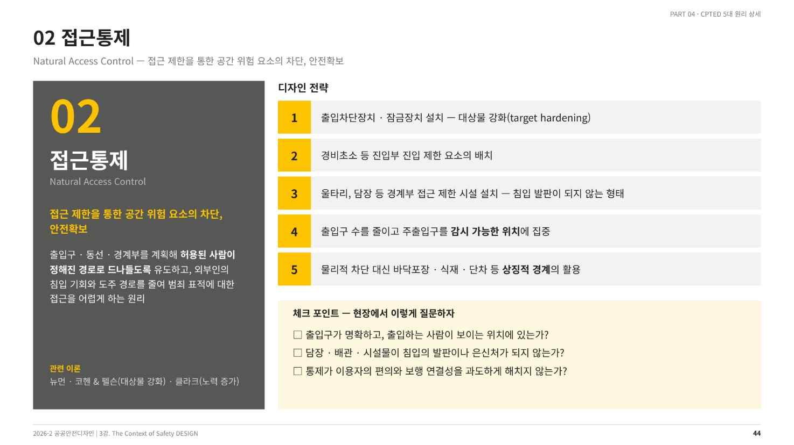<figcaption>접근통제 — 정의와 다섯 가지 디자인 전략(강의 슬라이드 44쪽)</figcaption></figure>
<p>영국 리버풀의 골목 게이트(alley-gating) 사례는 연립주택 뒤편 골목이 침입과 도주 경로로 악용되자, 주민만 열 수 있는 게이트를 설치한 것이다. 평가 결과 게이트를 설치한 지역의 주거침입이 유의미하게 줄었고, 인근 지역으로의 범죄 전이도 크지 않았다(Bowers, Johnson &amp; Hirschfield, 2004). Part 2에서 다룬 미국 데이턴 파이브 오크스(1992) 사례 역시, 통과 교통이 많던 주거지를 게이트와 막다른 길로 나누어 10개의 미니 근린으로 재구성함으로써 2년 안에 전체 범죄를 약 25%, 폭력범죄를 50% 줄였다. 동선 통제가 영역성과 주민 결속을 함께 높인 결과다. 국내에서는 택배기사를 가장한 침입 범죄를 막기 위해 2013년부터 서울시가 운영해 온 여성안심택배가 있다. 공공장소에 무인 택배보관함을 설치해 낯선 사람과 대면하거나 현관을 열지 않고도 물품을 받을 수 있게 함 으로써, 주거로의 접근 기회 자체를 없앤 서비스 디자인형 접근통제 사례다. 다만 과도한 담장과 게이트는 공공 공간을 사유화하고 자연적 감시를 가릴 수 있으므로, ‘닫는 디자인’보다는 ‘읽히는 경계’와 통제된 출입을 지향해야 한다.</p>
<figure class="lx-fig"><figcaption>접근통제의 사례와 실증 — 골목 게이트와 여성안심택배(강의 슬라이드 45쪽)</figcaption></figure>
<h3 id="sec-27">4.3 영역성 강화 (Territoriality)</h3>
<p>영역성 강화는 공간의 경계를 구분함으로써 소유감을 강화하고 공적 소유가치를 확립하는 원리다. 공간의 성격을 공적·반공적·반사적·사적 공간으로 디자인 언어를 통해 구분하면, 이용자에게는 소유의식과 책임감을 주고 외부인에게는 ‘누군가 관리하는 공간’이라는 인식을 준다. 제이콥스와 뉴먼의 이론, 그리고 2세대 CPTED가 강조하는 주민 책임감이 이 원리와 맞닿아 있다.</p>
<h4>디자인 전략</h4>
<ul class="lx-list"><li>주출입·보행 동선에 상징물이나 조경수를 설치한다.</li><li>공간의 내·외부, 경계부의 바닥포장을 차별화한다.</li><li>일정 조도 이상의 조명을 사용하고 색채를 구분한다.</li><li>문주·게이트·사인으로 공간의 시작과 소속을 표현한다.</li><li>주민이 가꾸는 화단이나 텃밭 등 점유와 돌봄의 흔적을 남긴다.</li></ul>
<aside class="lx-box lx-check"><span class="lx-box-k">Check point</span><b>체크 포인트 — 현장에서 이렇게 질문하자</b><ul><li>이 공간이 누구의 공간인지 한눈에 읽히는가?</li><li>공공에서 사적 공간으로의 전이가 단계적으로 표현되는가?</li><li>주민이 가꾸고 관리하는 흔적이 보이는가?</li></ul></aside>
<figure class="lx-fig">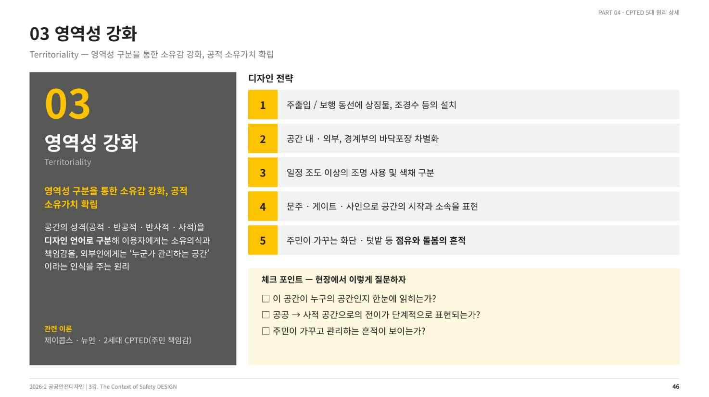<figcaption>영역성 강화 — 정의와 다섯 가지 디자인 전략(강의 슬라이드 46쪽)</figcaption></figure>
<p>뉴먼이 분석한 클래슨 포인트(Clason Point) 사례는 공동 마당을 세대별 앞마당으로 나누자 주민이 스스로 공간을 관리하기 시작했음을 보여 준다. 공공 공간에서 반공적, 반사적, 사적 공간에 이르는 경계의 단계를 디자인한 결과다. 국내 사례인 서울 염리동 ‘소금길’은 복잡한 골목에 통일된 색채와 번호 체계를 적용해 길의 정체성을 만들고 ‘관리되는 동네’라는 인식을 형성했으며, 주민이 참여해 만든 사인과 거점공간이 공동체의 영역을 표현해 범죄에 대한 두려움을 13.6% 줄이는 데 기여했다(서울시, 2012). 교육부가 2013년 마련한 학교 셉테드 가이드라인은 사각지대에 CCTV 등 안전시설을 설치하고 개방형 공간으로 설계하는 한편, 외벽 도색·인공 암벽·이벤트 무대 등 으로 학교 분위기를 개선하고 학생 보호를 위한 유지관리 프로그램과 결합해 학교를 ‘우리의 공간’으로 인식하게 한다. 이 사례들이 공통으로 말해 주는 것은, 영역성이 ‘소유’의 표현이자 ‘돌봄’의 약속이며, 주민이 참여해 만든 경계일수록 오래 지켜진다는 사실이다.</p>
<figure class="lx-fig"><figcaption>영역성 강화의 사례와 실증 — 클래슨 포인트와 소금길(강의 슬라이드 47쪽)</figcaption></figure>
<h3 id="sec-28">4.4 활동의 활성화 (Activity Support)</h3>
<p>활동의 활성화는 공간 프로그래밍을 통해 공간의 사용성과 활력을 높이는 원리다. 공공공간에 사람들이 모이고 머무를 이유를 만들면, 정당한 이용자가 곧 감시자가 된다. 비어 있는 공간이 가장 위험하다는 것이 이 원리의 출발점이며, 제이콥스·엔젤·브랜팅햄의 이론, 그리고 2세대 CPTED가 강조하는 모임 장소 제공과 맞닿아 있다.</p>
<h4>디자인 전략</h4>
<ul class="lx-list"><li>운동시설·휴게시설 등 레저·커뮤니티 시설을 설치한다.</li><li>유동인구를 끌어들이는 집객 요소를 도입하고 공간을 개방적으로 구성한다.</li><li>사계절, 주야간 모두 이용 가능한 형태의 시설과 공간 프로그램을 마련한다.</li><li>저층부에 상가·카페 등 가로와 접하는 활성 용도를 배치한다.</li><li>이동식 의자, 이벤트, 마켓 등 운영 프로그램과 결합한다.</li></ul>
<aside class="lx-box lx-check"><span class="lx-box-k">Check point</span><b>체크 포인트 — 현장에서 이렇게 질문하자</b><ul><li>하루 중, 계절 중 이 공간이 비어 있는 시간대는 언제인가?</li><li>앉을 곳·그늘·프로그램 등 머무를 이유가 있는가?</li><li>다양한 연령과 집단이 함께 이용할 수 있는가?</li></ul></aside>
<figure class="lx-fig">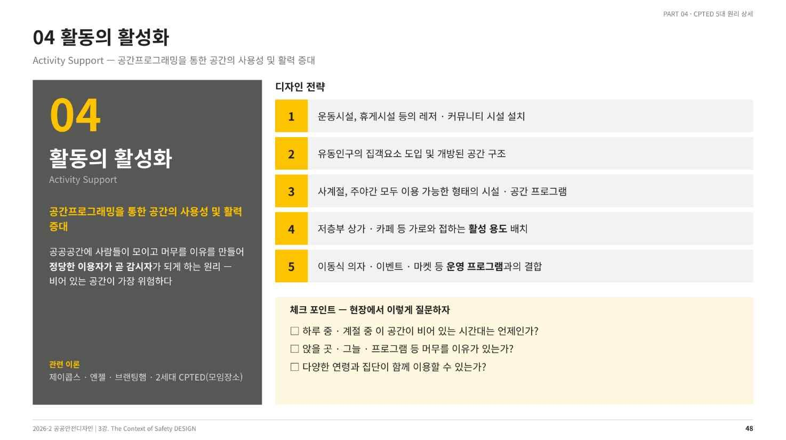<figcaption>활동의 활성화 — 정의와 다섯 가지 디자인 전략(강의 슬라이드 48쪽)</figcaption></figure>
<p>뉴욕 브라이언트 파크(1988~1992)는 1980년대 마약 거래와 강도의 온상이었다. 사회학자 W. H. 화이트는 이 문제를 ‘이용 부족(under-use)’으로 진단했고, 높은 관목과 담장을 걷어내 공원을 가로 높이에 가깝게 낮추고 입구를 넓히는 한편 이동식 의자·카페·프로그램을 도입했다. 재개장 이후 이용자가 크게 늘고 범죄는 급감했다. 국내에서는 서울 염리동 ‘소금길’(2012)이 좁고 복잡한 골목을 주민 운동코스로 연결해 걷고 뛰는 사람을 늘렸다. 골목에 ‘거리의 눈’을 되돌린 이 활성화 전략은 지킴이집·주민거점공간과 결합되어 이용과 감시와 참여가 서로를 강화하는 선순환을 만들었다. 경찰청이 운영하는 아동안전지킴이집 제도는 통학로 주변 문구점·편의점·약국 등을 위급 시 도움을 요청할 수 있는 거점으로 지정한다. 새로운 시설을 짓지 않고도 이미 존재하는 24시간 활동거점을 안전망으로 전환한 것이다. 이 사례들은 비어 있는 광장보다 머물고 싶은 공간이 더 안전하며, 특정 집단을 몰아 내는 배제형 설계가 아닌 포용적 활성화가 CPTED의 지향점임을 보여 준다.</p>
<figure class="lx-fig"><figcaption>활동의 활성화 사례와 실증 — 브라이언트 파크와 소금길(강의 슬라이드 49쪽)</figcaption></figure>
<h3 id="sec-29">4.5 유지관리 (Maintenance and Management)</h3>
<p>유지관리는 시설과 공간을 처음 설계된 상태로 깨끗하고 기능적으로 유지함으로써, ‘관리되고 있는 공간’이라는 신호를 지속적으로 보내는 원리다. 방치의 흔적은 무질서와 범죄를 부른다는 것이 이 원리의 핵심 전제이며, 뉴먼의 이미지 개념, 클라크의 이익 부정·모방 억제 기법, 그리고 깨진 유리창 이론이 그 이론적 배경이다.</p>
<h4>디자인 전략</h4>
<ul class="lx-list"><li>파손과 훼손에 강한 재질을 사용한다.</li><li>정기적인 유지 관리와 청결을 유지한다.</li><li>휴먼스케일의 참여형 관리시스템을 도입한다.</li><li>파손이나 낙서는 즉시 복구하고, 신고 체계와 관리 주체를 명확히 한다.</li><li>조명·CCTV·비상벨 등 방범시설의 작동 상태를 정기적으로 점검한다.</li></ul>
<aside class="lx-box lx-check"><span class="lx-box-k">Check point</span><b>체크 포인트 — 현장에서 이렇게 질문하자</b><ul><li>고장과 파손은 얼마나 빨리 복구되는가?</li><li>관리 주체와 예산이 설계 단계에서 정해져 있는가?</li><li>주민이 관리에 참여하는 구조가 있는가?</li></ul></aside>
<figure class="lx-fig">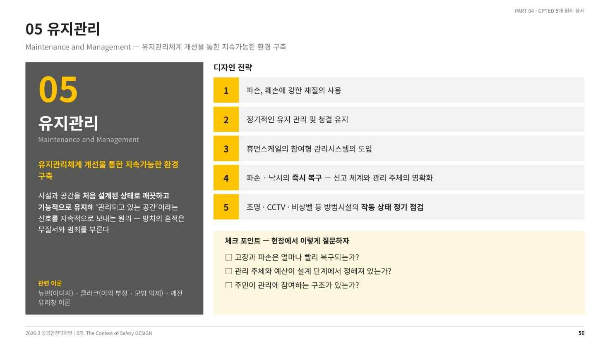<figcaption>유지관리 — 정의와 다섯 가지 디자인 전략(강의 슬라이드 50쪽)</figcaption></figure>
<p>윌슨과 켈링(Wilson &amp; Kelling, 1982)의 깨진 유리창 이론은, 깨진 창문 하나를 방치하면 ‘아무도 신경 쓰지 않는다’는 신호가 되어 더 큰 무질서와 범죄로 이어진다고 설명한다. 그 근거가 된 짐바르도의 실험(1969)에서는 번호판을 떼고 방치한 차량이 뉴욕 브롱크스에서는 곧바로 훼손되었고, 팔로알토에서는 일주일간 무사하다가 연구진이 일부를 부수자 급속히 파괴되었다. 뉴욕시는 1984~1989년 ‘Clean Car Program’을 통해 낙서된 지하철 차량을 즉시 운행에서 제외해 세척하고, 깨끗해진 차량은 다시 낙서되지 않도록 관리했다. 낙서가 승객에게 노출되는 ‘이익’을 원천적으로 없애자, 5년 만에 낙서 없는 지하철 차량을 달성할 수 있었다. 이는 상황적 범죄예방의 이익 부정·모방 억제 기법이기도 하다. 다만 깨진 유리창 이론은 1990년대 뉴욕의 무관용 경찰활동 으로 확대되며 경미한 위반에 대한 과잉 단속과 특정 집단 차별 논란을 낳기도 했다. 디자인이 맡아야 할 몫은 처벌을 강화하는 것이 아니라, 내구성 있는 소재와 신속한 복구 체계, 주민 참여형 관리로 ‘돌봄받는 환경’을 만드는 것이다.</p>
<p>아무리 좋은 디자인도 관리되지 않으면 곧 위험한 공간이 되므로, 설계 단계에서부터 관리 주체와 예산, 주민 참여 구조까지 함께 디자인해야 한다.</p>
<figure class="lx-fig">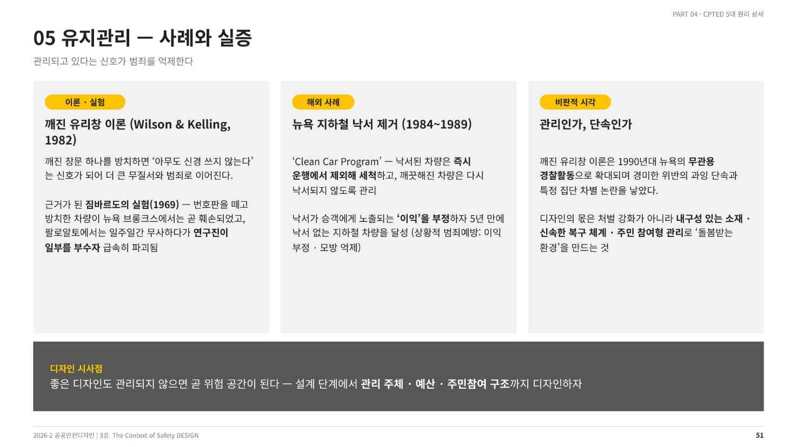<figcaption>유지관리의 사례와 실증 — 깨진 유리창 이론과 뉴욕 지하철 낙서 제거</figcaption></figure>
<header class="lx-part" id="part-30"><h2>참고문헌</h2><p class="lx-lead">References</p></header>
<ul class="lx-refs"><li>문화체육관광부 (2018). 공공디자인 진흥종합계획(2018~2022).</li><li>국토교통부·법무부·건축도시공간연구소 (2015). 범죄예방 환경설계 가이드북.</li><li>서울특별시 (2012). 범죄예방디자인 프로젝트 — 마포구 염리동 소금길.</li><li>홍익대학교 공공디자인 (2025). 공공안전디자인 선행이론 고찰.</li><li>Angel, S. (1968). Discouraging Crime Through City Planning. UC Berkeley.</li><li>Armitage, R., &amp; Monchuk, L. (2011). Sustaining the crime reduction impact of designing out crime: Re-evaluating the Secured by Design scheme 10 years on. Security Journal, 24(4).</li><li>Bowers, K., Johnson, S., &amp; Hirschfield, A. (2004). Closing off opportunities for crime: An evaluation of alley-gating. European Journal on Criminal Policy and Research, 10(4).</li><li>Brantingham, P. J., &amp; Brantingham, P. L. (1981). Environmental Criminology. Sage.</li><li>Clarke, R. V. (1983). Situational crime prevention: Its theoretical basis and practical scope. Crime and Justice, 4.</li><li>Clarke, R. V., &amp; Mayhew, P. (1988). The British gas suicide story and its criminological implications. Crime and Justice, 10.</li><li>Cohen, L. E., &amp; Felson, M. (1979). Social change and crime rate trends: A routine activity approach. American Sociological Review, 44(4).</li><li>Cornish, D. B., &amp; Clarke, R. V. (1986). The Reasoning Criminal. Springer.</li><li>Cornish, D. B., &amp; Clarke, R. V. (2003). Opportunities, precipitators and criminal decisions. Crime Prevention Studies, 16.</li><li>Jacobs, J. (1961). The Death and Life of Great American Cities. Random House.</li><li>Jeffery, C. R. (1971). Crime Prevention Through Environmental Design. Sage.</li><li>Mihinjac, M., &amp; Saville, G. (2019). Third-generation CPTED. Social Sciences, 8(6).</li><li>Newman, O. (1972). Defensible Space. Macmillan. / (1996). Creating Defensible Space. U.S. HUD.</li><li>Saville, G., &amp; Cleveland, G. (1997). 2nd Generation CPTED: An antidote to the social Y2K virus of urban design.</li><li>Sherman, L. W., Gartin, P. R., &amp; Buerger, M. E. (1989). Hot spots of predatory crime. Criminology, 27(1).</li><li>Welsh, B. C., &amp; Farrington, D. P. (2008). Effects of improved street lighting on crime. Campbell Systematic Reviews.</li><li>Welsh, B. C., &amp; Farrington, D. P. (2009). Public area CCTV and crime prevention. Justice Quarterly, 26(4).</li><li>Wilson, J. Q., &amp; Kelling, G. L. (1982). Broken windows. The Atlantic Monthly.</li><li>이미지·도표 출처: 원 강의자료(3강. The Context of Safety DESIGN, 2026) 및 www.cpted.kr</li></ul>
      <footer class="lx-end">
        <p>공공안전디자인 · 3강. The Context of Safety DESIGN</p>
        <a class="lx-back" href="../index.html#board">강의 목록으로</a>
      </footer>
    </article>
  </div>
</main>

<footer class="site-footer">
  <div class="wrap">
    <div class="footer-bottom">
      <span>© 2026 SPD Lab, Hongik University. 강의 자료의 저작권은 이현성 교수에게 있습니다.</span>
      <a href="#top">Back to top ↑</a>
    </div>
  </div>
</footer>

<script src="../assets/js/main.js?v=20260929c"></script>
<script src="lecture.js?v=20260929d"></script>
</body>
</html>
